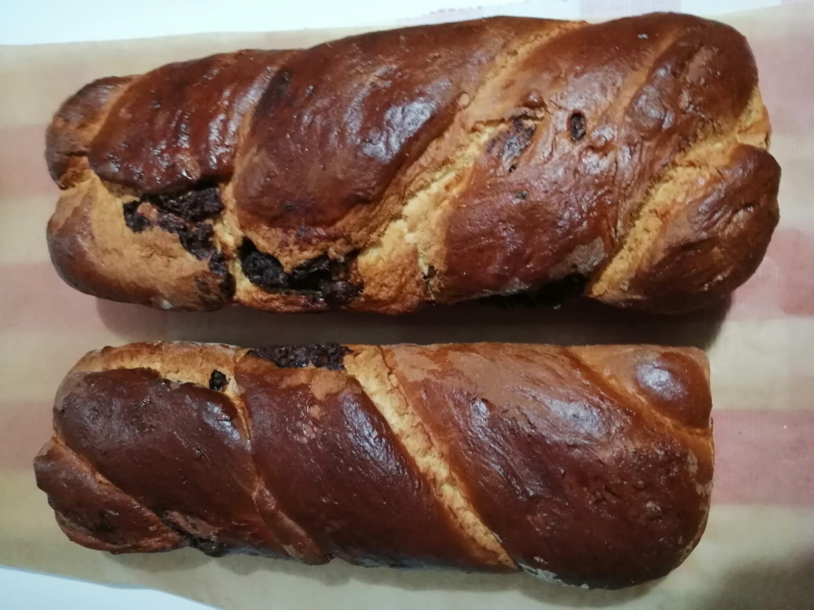
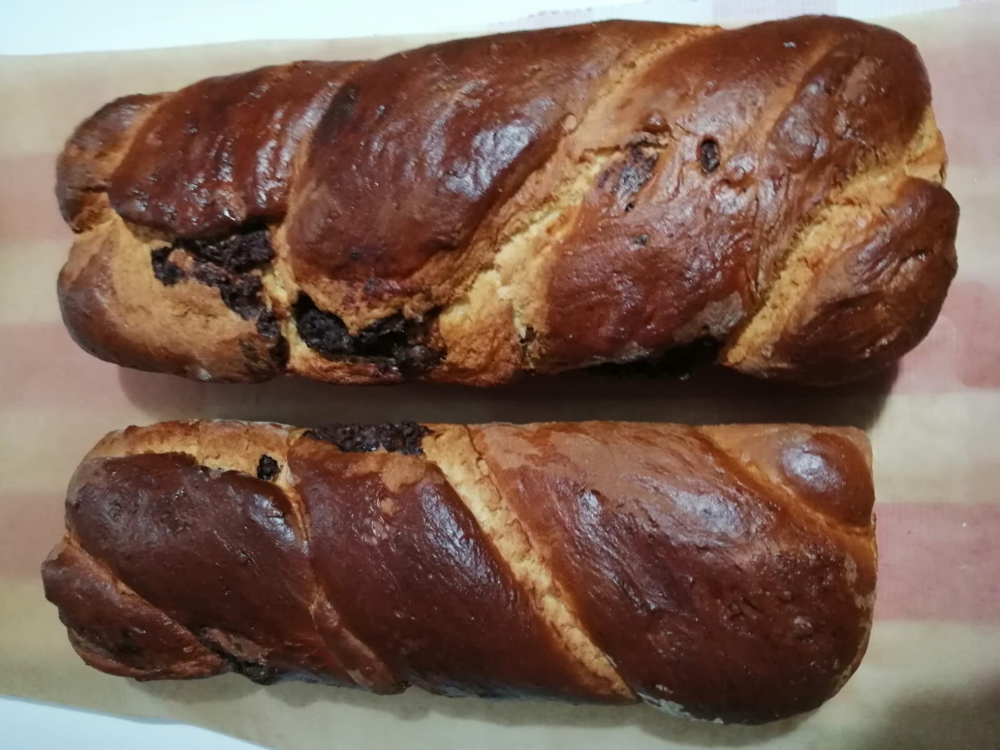

Profile
Personal Information
| Name | Elena-Laura Birău |
| Age | 19 |
| Nationality | Romanian |
| Pre-education and subjects followed during previous education | The name of my high school is National College "Dr. Ioan Mesota" and my profile was mathematics-computer science, intensive computer science. |
About me
As you can see in the first picture, I'm from a very beautiful city, located in the center of Romania. It is one of the most known tourist locations, so some of you might have visited it. The area is also known for the Bran(Dracula) Castle, Peles Palace and skiing. I moved there about 8 years ago, so I'm quite used to being "the new kid". Therefore, I managed to get a couple of friends here quite quickly, as you can see in the next photo.
I'm also a movie enthusiast and a movie I have seen recently and is now on my "Best movies I have watched" list is "Identity". You can click the link and read more about it. The next photo shows a romanian traditional dessert that I have made (and I'm really proud about it). It is considered a hard to make dish that is usually baked around Christmas or Easter. The last picture represents one of my favorite activities (especially before the pandemic), volunteering. I have been a volunteer for Hospice for about 3 years now and it is one of my dearest organizations.
Some of my characteristics are:
| Positive ones | Negative ones |
|
|

 
